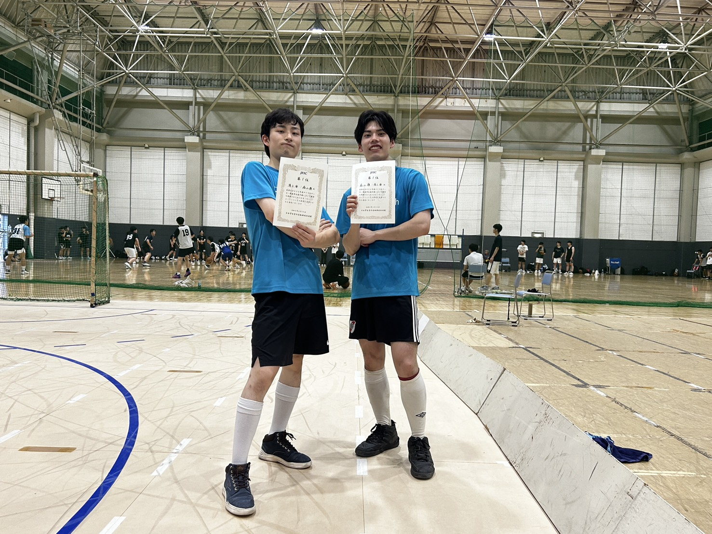

2026全日本選手権において、東京科学大学からは3チームが出場し、 結果は以下の通りとなりました。
-
科学大１
森山・湯上ペア
優勝 -
科学大２
牧野・柳井ペア
2位 -
科学大３
杉村・荒川ペア
4位
今大会は全4チームが出場し、 科学大1が優勝という結果になりました。
今大会は昨年王者の福田・山本ペアが欠場し、 その同期である森山・湯上ペアと一つ下の後輩の牧野・柳井ペアのどちらが優勝するかが注目された大会でした。 その２ペアは昨年の関東学生選手権の３位決定戦で戦っており、牧野・柳井ペアが勝利を収めていました。
実力の拮抗した両ペアの試合は白熱。決勝戦は前後半で決着がつかず、５分の延長戦へ。 延長開始３０秒で森山・湯上ペアがカウンターからの華麗なパス、シュートで勝ち越し。 後半３分半で追加点を決め見事、初優勝を決めました。
１１月に開かれる学生全日本選手権に向けてどのチームも頑張ってほしいです。

左から優勝した湯上選手・森山選手
森山 嶺選手（機械系学士４年）のコメント
今までの大会では終盤に失点してあと一歩届かず、3位以上にも入れませんでした。 その悔しさを糧に練習を続けてきて、今回初めて優勝することができて本当に嬉しいです。 ペアで狙っていた形を完璧に崩して逆転ゴールを決められたことが印象に残っています。 これからもさらにレベルアップできるよう頑張っていきたいと思います。
湯上 海
考え中